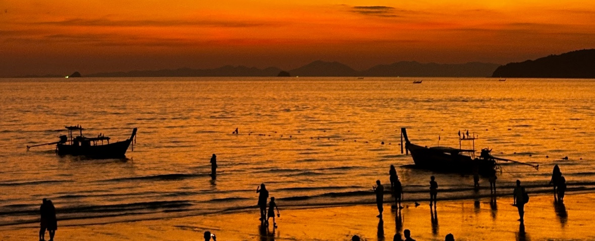
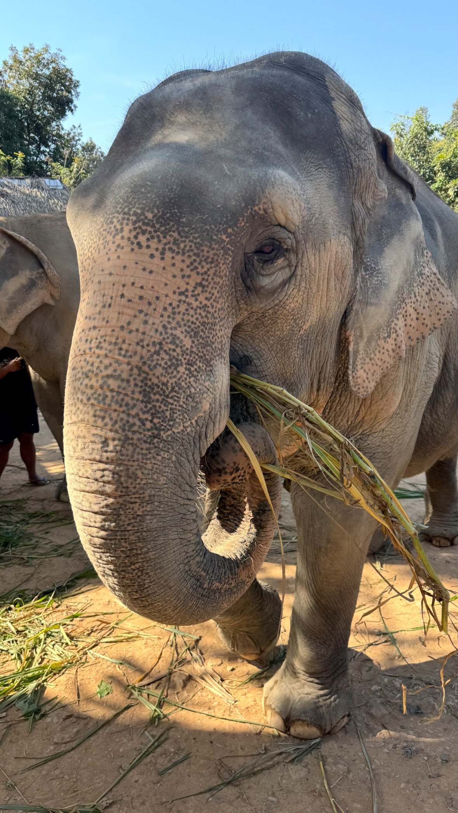
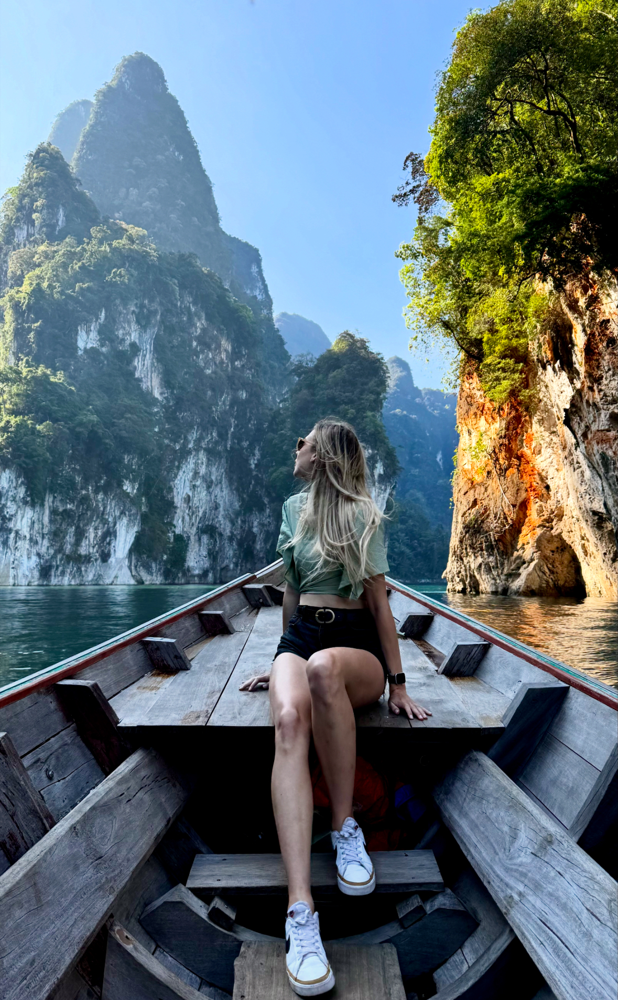
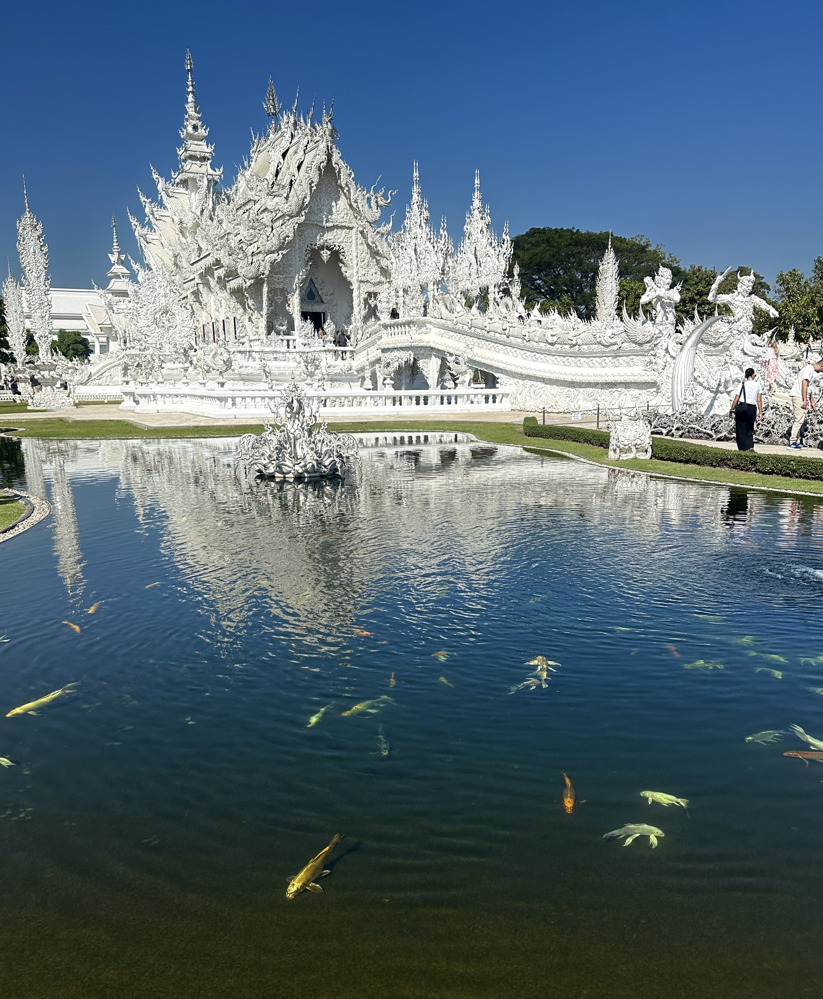

Welcome to Thailand Travel Tutor
Thailand Travel Tutor is designed to help you plan your own trip to Thailand. Whether you're interested in the bustling city life of Bangkok, the beautiful beaches of Phuket, or the cultural richness of Chiang Mai, we've got you covered with tips, guides, and resources to make your travel experience unforgettable. My goal is to make planning easier, more affordable, and enjoyable for anyone looking to visit this amazing country.
Who am I? Why Choose Thailand Travel Tutor?
My name is Nikayla Jakubowski, and I am a travel enthusiast with a passion for exploring new cultures and destinations. After planning and completing my own 20 day, multi-city trip across Thailand, I learned how overwhelming it can be to organize a long adventure in a new country. I've traveled through Bangkok, Chiang Mai, Pattaya, Phuket, and multiple islands. Experiencing everything from temples to elephant sanctuaries, dives with sharks, hikes with monkeys and much more. I am excited to share part of my journey and help you navigate yours.
Thailand is one of my favorite places I have visited, but it's not the only place I have created memories. In the last couple of years I have traveled to Egypt, India, Singapore, Australia, Dubai, and many parts of Europe. These experiences help me give better guidance, because I have learned what works, what doesn't and how to plan efficiently without overspending. Thats why I created Thailand Travel Tutor to help you plan and create your own memories in Thailand.



